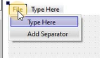
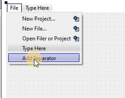
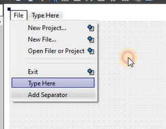
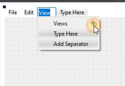
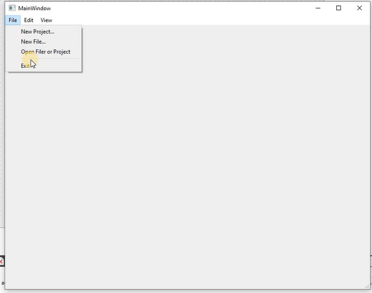
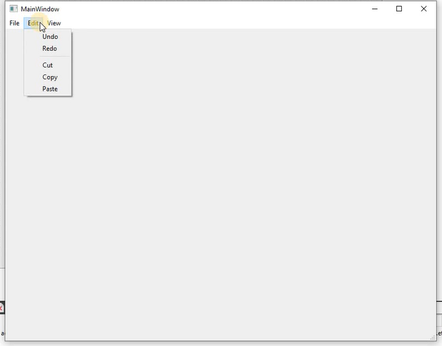
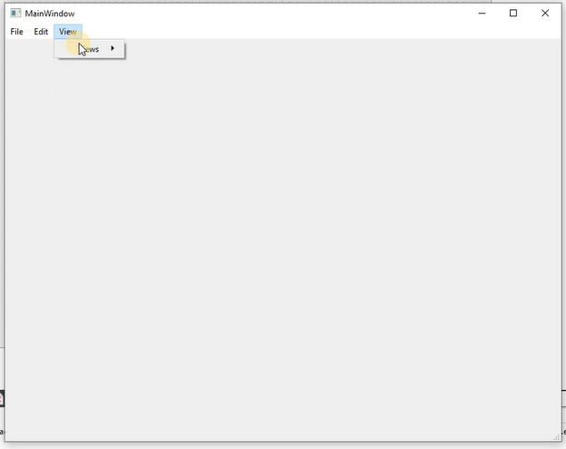
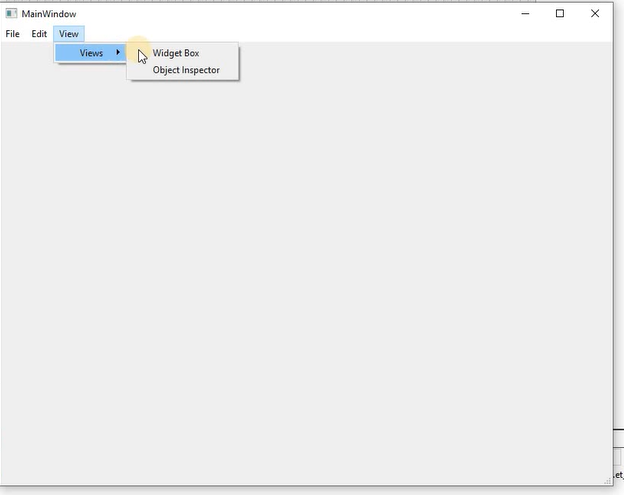

Criando um Menu com Separadores
Para essa aplicação é necessário saber um pouco sobre Menu e Separador.
Um widget de menu pode ser um menu suspenso em uma barra de menus ou um menu de contexto independente. Os menus suspensos são mostrados pela barra de menus quando o usuário clica no respectivo item ou pressiona a tecla de atalho especificada.
MenuSeparator deve ser usado para separar itens (normalmente controles de MenuItem ) em um Menu.
Neste tutorial veremos como criar um Menu.
Vamos utilizar apenas a parte de design.
Na parte superior vai ter um espaço chamado Type Here, é nessa parte que vamos fazer o menu;
Ao clicar duas vezes em Type Here é possível mudar o nome.
Modifiquei o primeiro para File, agora é possível adicionar mais coisas abaixo de File ao clicar;
em Add Separator é possível separar itens do menu;
E ficará assim…
Também pode adicionar ao lado de um item…
Ao executar a tela deverá ficar assim com o separador:
 Também terá itens separados ao lado de outros itens
 